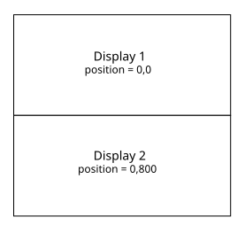
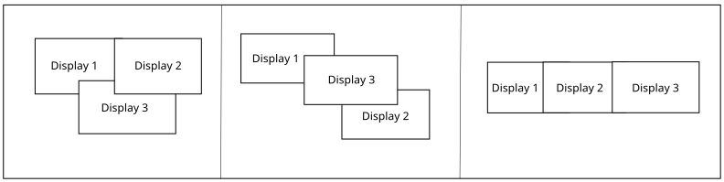
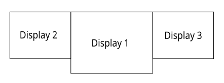

There is more than one way to set up cursor movement between multiple displays.
Pointer sessions allow you to control the shape and position of the cursor along with its movement from one display to the next.
See the section Pointer sessions
for more information.
A simpler alternative to pointer sessions, display groups allow for cursor movement between displays by arranging the position of each display in a valid configuration. Display positions can be set when Screen is launched using the graphics.conf, or through code with the SCREEN_PROPERTY_POSITION API.
To set up cursor movement by using display groups, you need to set the position of the top left corner of each display. The 0,0 position is the top left corner and the y axis increases downwards.
... begin display 1 position = 0,0 formats = rgbx8888 rotation = 0 video-mode = 1280 x 800 @ 60 end display begin display 2 position = 0,800 rotation = 0 formats = rgbx8888 video-mode = 1280 x 800 @ 60 end display ...

...
screen_set_display_property_iv(display1, SCREEN_PROPERTY_POSITION, int[2]{x,y});
...
When deciding on the location of the displays, you have to create a valid layout where each display has an edge touching another display's edge. The cursor moves from one display to the next once it crosses the edge where they touch. Otherwise, the cursor will be stuck on the current display. If the cursor is required to transition when it is not along the edges of touching displays, then you need to use pointer sessions as well.

If you configured your displays' positions in a valid display group configuration in the graphics.conf file, a group is created using the current configuration. If you haven't configured any of your displays' positions, a group is created with the displays aligned horizontally, as shown in the figure below.

When a new virtual display is created using screen_create_display(), it is added to the display group. Its default position is the bottom right of the right most display.
You can remove a display from the display group by deleting it using screen_destroy_display(). If deleting the display results in an invalid display group, a warning is written to the slog2info log and the cursor can no longer move between displays.